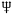
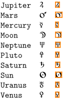
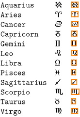
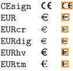
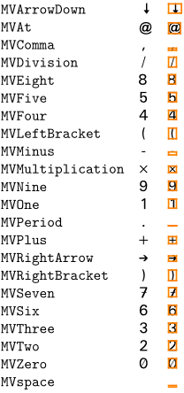
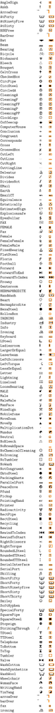
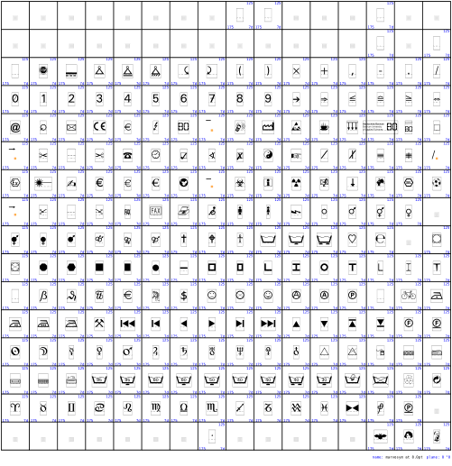

Contents
You can load the Martin Vogel Symbols with
\usesymbols[mvs]
There are several symbol sets defined. If you want the symbol for Neptune, you can either load the whole astronomic sybol set first:
\setupsymbolset [astronomic] \symbol [Neptune]
or use it as
\symbol[astronomic][Neptune]
- 
Warning: some definitions in symb-mvs are outdated since the file symb-mvs.tex wasn't synchronized with font changes. Also, some symbol sets don't have really sensible names. The file needs to be updated.
Symbol Sets
astronomic
- 
zodiac
- 
europe
- 
martinvogel 1
- 
martinvogel 2
- 
martinvogel 3
All glyphs
- 
See also
- marvosym on CTAN and marvodoc.pdf
- source: symb-mvs.tex